2024 年 5 月份阅读总结 01
5 月份稍微有点划水，上旬的阅读状态好一些，中下旬状态有下滑，整体完成 9 本书的阅读。

今年阅读书籍依然还是从头到尾看完为主的形式，少量书籍是采取跳着看的形式，根据目前的需求选择感兴趣的内容。
阅读工具方面，今年也调整为了微信读书，5 月份微信读书的网页版也有迭代升级，支持双栏显示，特别适合用大屏速读。
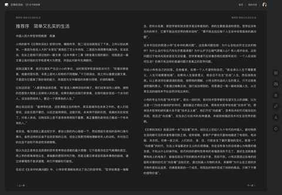
在 app 端有新增 ai 方面的功能：Ai 问书。
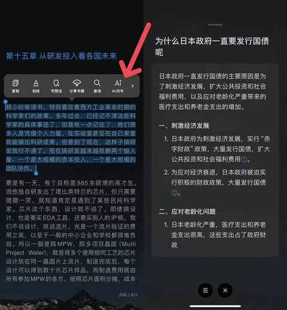
今天提到的 4 本书都与播客相关，基本都是听了播客之后，就去看了，如果大家也想各种类型的书多看看，或者有些书想更全面的了解下再决定是否看，不妨先在小宇宙 app里面检索下。
第 1 本
《时间贫困》
⭐️⭐️⭐️⭐️⭐️
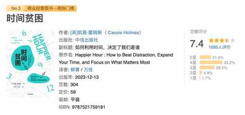
阅读缘由：
在播客中听到纵横四海和日谈公园的串台节目，虽然去年就已经把这本书加入书架，但一直没有看。
正好当时也觉得自己在时间安排上出现了问题，阅读时间和运动时间都越来越没有保障，想通过阅读这本书，通过书中的方法去做调整。
内容摘录：
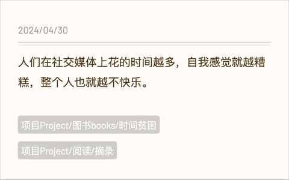
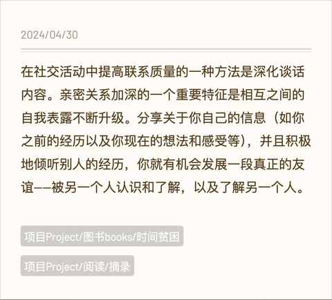
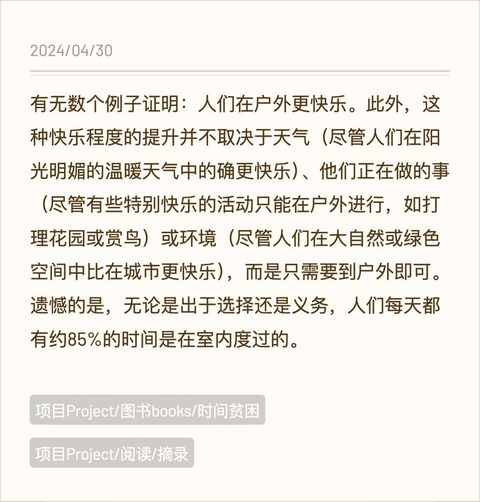
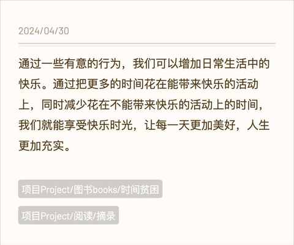
有启发的点：
第 2 本
《幸福的方法》
⭐️⭐️⭐️⭐️
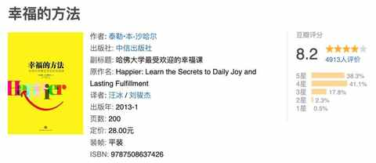
阅读缘由：
在《时间贫困》中被多次提及，就书名来说也很好奇作者会提供什么样的方法和做哪些论述。
内容摘录：
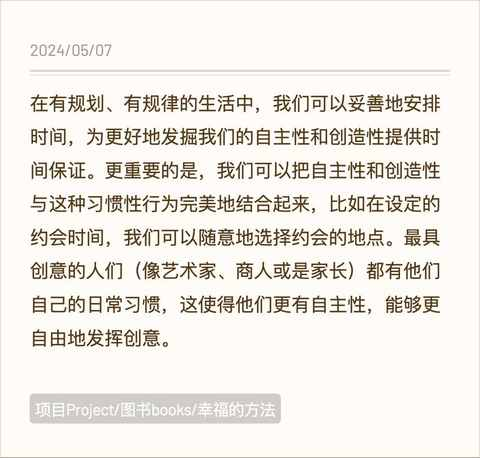
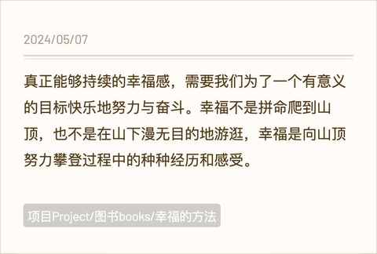
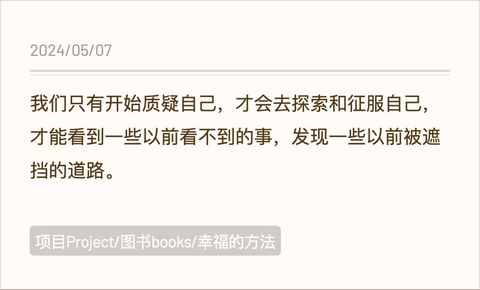
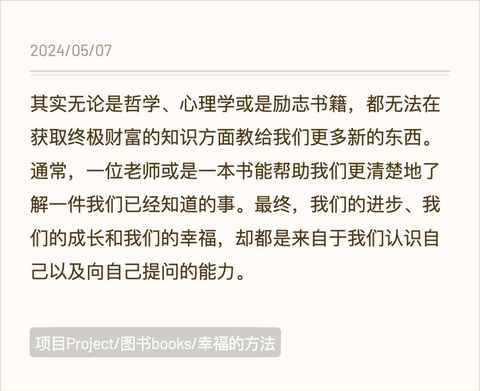
有启发的点：
第 3 本
《 刷新 PB》
⭐️⭐️⭐️⭐️
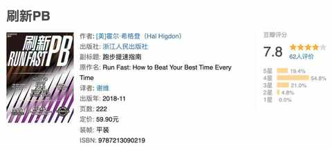
阅读缘由：
最近一年一直有坚持跑步，随着跑量的提升对训练方法有了需求，在小红书上检索到的训练计划往往看不太懂，不清楚如此设置的目的。
偶然发现关注的播客节目有介绍过这本书，听完之后就听劝的去看了这本跑步方面的经典书籍。
内容摘录：
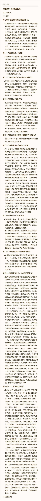
有启发的点：
第 4 本
《 日常的深处》
⭐️⭐️⭐️⭐️
阅读缘由：
日常听播客的过程中看到这个标题，就点进去了，是主播和本书作者的对谈，两个人都很真诚，做饭是一件耗时耗力但是能真切感受到生活美好的事情，阅读也是。
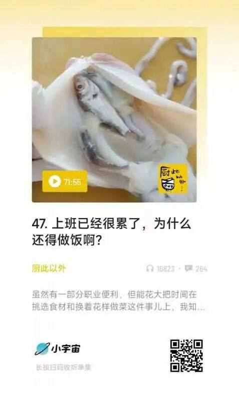
内容摘录：
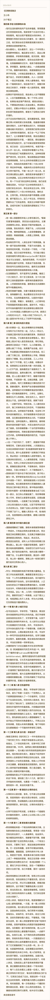
有启发的点：